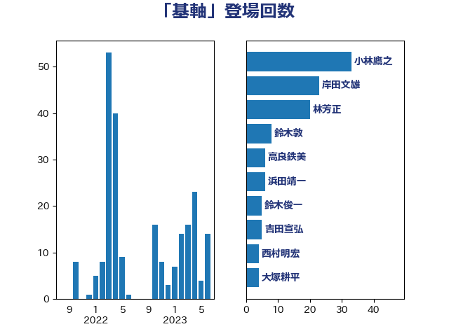

単語「基軸」

| 小林鷹之 | 自由民主党 | 33 回 |
| 岸田文雄 | 自由民主党 | 23 回 |
| 林芳正 | 自由民主党 | 20 回 |
| 鈴木敦 | 国民民主党 | 8 回 |
| 高良鉄美 | 無所属 | 6 回 |
| 浜田靖一 | 自由民主党 | 6 回 |
| 鈴木俊一 | 自由民主党 | 5 回 |
| 吉田宣弘 | 公明党 | 5 回 |
| 西村明宏 | 自由民主党 | 4 回 |
| 大塚耕平 | 国民民主党 | 4 回 |
| 三木圭恵 | 日本維新の会 | 4 回 |
| 阿部司 | 日本維新の会 | 3 回 |
| 福田昭夫 | 立憲民主党 | 3 回 |
| 沢田良 | 日本維新の会 | 3 回 |
| 長友慎治 | 国民民主党 | 2 回 |
| 金村龍那 | 日本維新の会 | 2 回 |
| 竹内譲 | 公明党 | 2 回 |
| 石垣のりこ | 立憲民主党 | 2 回 |
| 石井苗子 | 日本維新の会 | 2 回 |
| 牧山ひろえ | 立憲民主党 | 2 回 |
| 渡辺周 | 立憲民主党 | 2 回 |
| 泉健太 | 立憲民主党 | 2 回 |
| 河西宏一 | 公明党 | 2 回 |
| 太栄志 | 立憲民主党 | 2 回 |
| 北側一雄 | 公明党 | 2 回 |
| 勝目康 | 自由民主党 | 2 回 |
| 上川陽子 | 自由民主党 | 2 回 |
| 高木かおり | 日本維新の会 | 1 回 |
| 馬場雄基 | 立憲民主党 | 1 回 |
| 音喜多駿 | 日本維新の会 | 1 回 |
| 野田佳彦 | 立憲民主党 | 1 回 |
| 野村哲郎 | 自由民主党 | 1 回 |
| 重徳和彦 | 立憲民主党 | 1 回 |
| 辻元清美 | 立憲民主党 | 1 回 |
| 茂木敏充 | 自由民主党 | 1 回 |
| 舟山康江 | 国民民主党 | 1 回 |
| 空本誠喜 | 日本維新の会 | 1 回 |
| 福山哲郎 | 立憲民主党 | 1 回 |
| 石井章 | 日本維新の会 | 1 回 |
| 矢倉克夫 | 公明党 | 1 回 |
| 漆間譲司 | 日本維新の会 | 1 回 |
| 浦野靖人 | 日本維新の会 | 1 回 |
| 浅川義治 | 日本維新の会 | 1 回 |
| 比嘉奈津美 | 自由民主党 | 1 回 |
| 森本真治 | 立憲民主党 | 1 回 |
| 梅村みずほ | 日本維新の会 | 1 回 |
| 枝野幸男 | 立憲民主党 | 1 回 |
| 松野博一 | 自由民主党 | 1 回 |
| 松山政司 | 自由民主党 | 1 回 |
| 松原仁 | 立憲民主党 | 1 回 |
| 木村次郎 | 自由民主党 | 1 回 |
| 新垣邦男 | 立憲民主党 | 1 回 |
| 徳永久志 | 無所属 | 1 回 |
| 平沼正二郎 | 自由民主党 | 1 回 |
| 平木大作 | 公明党 | 1 回 |
| 岡本三成 | 公明党 | 1 回 |
| 山本順三 | 自由民主党 | 1 回 |
| 山崎誠 | 立憲民主党 | 1 回 |
| 小野泰輔 | 日本維新の会 | 1 回 |
| 小西洋之 | 立憲民主党 | 1 回 |
| 小田原潔 | 自由民主党 | 1 回 |
| 寺田静 | 無所属 | 1 回 |
| 寺田学 | 立憲民主党 | 1 回 |
| 宮本岳志 | 日本共産党 | 1 回 |
| 大西健介 | 立憲民主党 | 1 回 |
| 大島敦 | 立憲民主党 | 1 回 |
| 堂込麻紀子 | 無所属 | 1 回 |
| 堀井巌 | 自由民主党 | 1 回 |
| 國場幸之助 | 自由民主党 | 1 回 |
| 勝部賢志 | 立憲民主党 | 1 回 |
| 加藤竜祥 | 自由民主党 | 1 回 |
| 前原誠司 | 国民民主党 | 1 回 |
| 住吉寛紀 | 日本維新の会 | 1 回 |
| 井野俊郎 | 自由民主党 | 1 回 |
| 上田清司 | 国民民主党 | 1 回 |